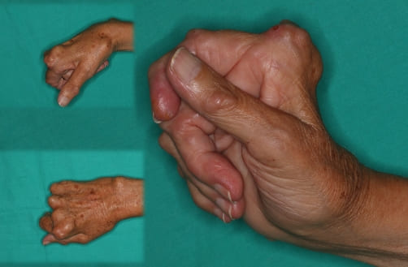
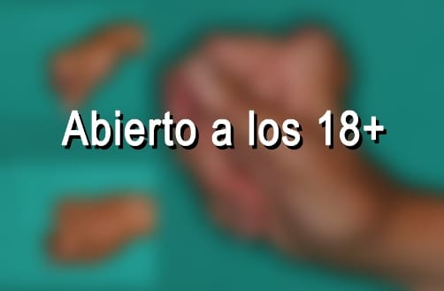
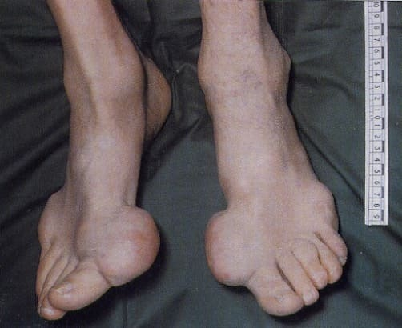
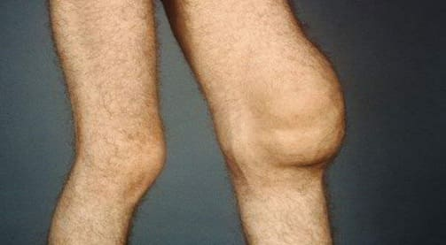
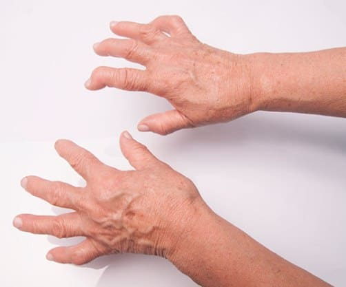
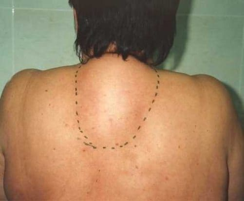
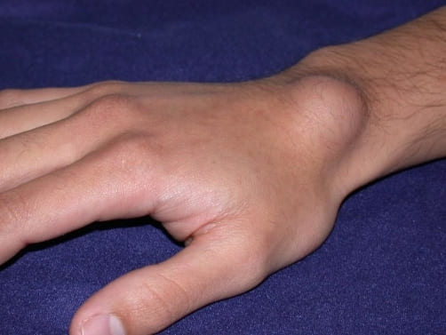
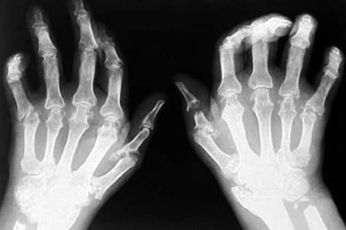
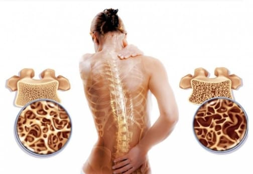
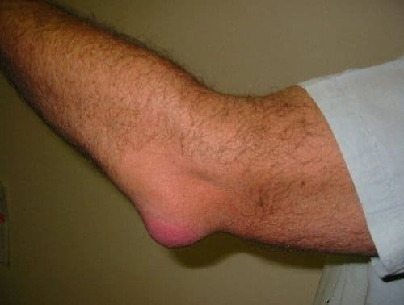

"Los métodos de terapia de las articulaciones que se implican en Chile no parecen nada convenientes". El
famoso reumatólogo alemán dio una entrevista franca a la edición chilena
Bernard Meyer es el jefe del mundialmente famoso Centro de Reumatología y Neurología de Berlín
Hay solo una causa de enfermedades de las articulaciones, pero está completamente ignorada por los médicos
chilenos.
BernardMeyer: "En Chile las enfermedades de las
articulaciones todavía se tratan con medicamentos anticuados y poco eficaces que requieren un uso constante
durante toda la vida. Mientras que en Alemania las articulaciones se tratan tan fácilmente como un
catarro."
El año pasado BernardMeyer viajó a Chile para
examinar la experiencia de sus colegas chilenos. Lo que vio en Chile, según él, no se puede explicar. En
nuestro país, según Bernard, la reumatología se paró en su desarrollo a nivel de
mediados del siglo pasado.
Después de dar unas entrevistas en Alemania,
BernardMeyer dio su consentimiento para una
entrevista a nuestra edición chilena. ¿Qué cosas no le gustaron al famoso médico en la medicina chilena? ¿Y
por qué afirma que los chilenos que sufren de articulaciones enfermas nunca podrán acabar con este
problema?
- Hablando ante los periodistas alemanes, Usted dijo que lo que había visto en Chile le había dejado en
shock. ¿Podría comentarlo?
- Ante todo quiero decir que me gusta mucho Chile, su cultura y sus ciudadanos. Pero el estado de la
medicina acá realmente deja en shock a los médicos alemanes. Su medicina retrasa como mínimo 20, o tal vez 30
años. Por lo menos, en lo que toca al tratamiento de enfermedades articulares y del aparato locomotor. Se
puede decir que la reumatología no existe como una ciencia en Chile.
Mire lo que los médicos
sugieren para tratar las articulaciones en Chile: Viprosal, Ibuprofeno, Voltaren\Fastum Gel, Diclofenac,
Theraflex, Nurofen y otros medicamentos similares.
Sin embargo, estos medicamentos NO TRATAN LAS
ARTICULACIONES Y LOS CARTÍLAGOS, solo alivian los síntomas de la enfermedad: dolor, inflamación, hinchazón.
Ahora imagine lo que está sucediendo en el cuerpo. Cuando uno toma una pastilla, aplica un gel anestésico o
hace una inyección, el dolor se pasa. Pero una vez que el remedio deja de funcionar, el dolor vuelve
inmediatamente.
Y el dolor es una señal importante, señala que una articulación tiene un proceso
patológico. Simplemente aliviando el dolor, las articulaciones afectadas sufren un mayor impacto. El proceso
de destrucción se acelera de 3 a 5 veces y al final conduce a unos cambios irreversibles, inmovilización
completa y discapacidad.
Esta forma de eliminar el dolor en las articulaciones no se utiliza en
Europa ya durante más de 20 años. Los remedios contra el dolor se usan solo en casos extremos, muy raramente y
con mucho cuidado. En Alemania, se venden solo con recetas y bajo estricto control médico.
Los
llamados 'hondroprotectores' están prohibidos por completo como medicamentos absolutamente fraudulentos e
inútiles.
¡Sus médicos y farmacéuticos simplemente mutilarán a la gente! Está claro que es mucho
más beneficioso vender constantemente a altos precios unos remedios para eliminar los síntomas que acabar con
la enfermedad para siempre, recuperar la articulación afectada, ¡pero es horrible!!!- ¿Y cómo en Alemania van las cosas con la terapia de las articulaciones?
- Todos los médicos alemanes, desde los catedráticos-reumatólogos hasta los médicos de cabecera
ordinarios y los paramédicos, entendieron hace mucho que no es necesario eliminar los efectos de la
enfermedad, sino sus causas. Es la garantía de una curación completa, rápida y segura. ¿Cuál es la causa
principal de lesiones en las articulaciones? Es la deposición de cristales en las articulaciones debido a un
trastorno de la circulación sanguínea y del líquido sinovial.
Los uratos son sales de ácido úrico
que causan la gota.
Los osteofitos, las sales calcinadas, son la causa del 97% restante de las
enfermedades articulares y de la columna vertebral. Que son todo tipo de artritis y artrosis, osteocondrosis,
osteoporosis, reumatismo, bursitis e incluso higroma. Todas estas enfermedades tienen una causa: deposición de
osteofitos.
Las sales, deponiéndose en las superficies de la articulación, actúan como si el papel
de lija afilara los tejidos circundantes - los huesos y el cartílago. Creciendo, los cristales de sales
comienzan a traumatizar el tejido muscular, los tendones, los vasos sanguíneos y los capilares, causando la
inflamación, infección, hinchazón y dolor severo.
En casos descuidados, los grandes cúmulos de
estas sales pueden romper fácilmente una parte del hueso con un movimiento brusco, causando así una
incapacidad total y inmovilizando para siempre la articulación.
Una idea errónea y muy peligrosa es
que el calcio es útil para las articulaciones. Sí, el calcio es útil, pero solo para las articulaciones SANAS.
Cuando las articulaciones ya duelen o castañetean, significa que ya se ha formado una capa de osteofitos, y el
calcio, además de fortalecer el tejido óseo, también fortalece estas sales-osteofitos, agravando y acelerando
su crecimiento.
Por eso los reumatólogos alemanes recuperan ante todo la circulación sanguínea en
la articulación afectada, de modo que se eliminen las sales acumuladas durante años. Esto, a su vez, recupera
la circulación normal del líquido sinovial y comienza el proceso de recuperación de los tejidos de la
articulación.
De hecho, las articulaciones humanas son muy regenerativas, son capaces de recuperarse por sí mismas, como una
cola de lagarto. Solo necesitan un poco de ayuda en esto - para liberarse de sales "pegadas" en ellas - y el
proceso se pondrá en marcha.
En los años 90, científicos suizos demostraron la importancia del
colágeno para el funcionamiento normal de las articulaciones. En la articulación, las fibras de colágeno
forman una especie de red que es el esqueleto del cartílago responsable de su elasticidad. ¿Puede imaginar el
poder de un mecanismo así? Hasta ahora, no hay nada más eficaz para las articulaciones. Ya no hay
que tomar constantemente medicamentos para aliviar el dolor y la inflamación. No hay que temer que un día la
articulación se "paralice" para siempre, quede totalmente inmóvil y necesite prótesis. La gente llega a estar
perfectamente sana durante décadas.
Cuando vi las estadísticas médicas de Chile, me asusté. ¿Sabe
cuál es la causa más frecuente de discapacidad en Chile? ¡No es cáncer ni SIDA ni diabetes, es artrosis! ¡La
artrosis más simple que en Alemania se trata en 2 o 3 semanas con el remedio bastante económico, en Chile
conduce a la discapacidad!
En Alemania hoy en día, las enfermedades articulares no se consideran
patologías peligrosas, a menos que, por supuesto, se trate de daños traumáticos graves: fracturas, fisuras
etc. El dolor y la inflamación en las articulaciones solo indican que estas "están contaminadas" con sales y
es hora de limpiarlas. Después de un curso mensual de 'limpieza', las articulaciones se vuelven en norma y se
puede olvidar de estos problemas para toda la próxima década.
Las enfermedades articulares que en
Chile están tratando de 'tratar' por separado, en Europa ya están unidas desde hace mucho en una sola
enfermedad 'Articulatio de sales' (deposiciones de sales en las articulaciones). Esta enfermedad incluye:
Artritis.


Gota.

Sinovitis.

Artrosis.

Osteocondrosis.

Higroma.

Reumatismo.

Osteoporosis.

Bursitis.

Esta es una lista muy breve, pero el resto de las enfermedades son solo una subespecie de estas nueve
patologías principales. Por ejemplo, la coxartrosis es una subespecie de la artrosis, etc.
Y toda
esta larga lista de enfermedades se cura con una limpieza muy simple y banal de las articulaciones. Es
absolutamente segura, ni siquiera requiere atención médica y se lleva a cabo en casa.
- ¿Cómo "limpian" las articulaciones en Alemania?
- Hoy en día, existen remedios especiales diseñados para restaurar las articulaciones. Por ejemplo, un
remedio muy bueno es
. Contiene
colágeno hidrolizado, por lo que este producto es más eficaz.
Otra ventaja importante de
es que contiene
varios macro y micronutrientes diseñados para mejorar el funcionamiento de los tejidos articulares. En otras
palabras, tiene un efecto complejo sobre el tejido óseo y cartilaginoso, el líquido sinovial, las fibras
musculares y el tejido de ligamentos y tendones. En otras palabras, tiene un efecto complejo y completo, son
unas cápsulas sorprendentes.
contiene muchos ingredientes. No los enumeraré todos, solo los principales:
Cúrcuma
Es capaz de adormecer el dolor y de suspender los procesos inflamatorios en el cuerpo.
Cola de caballo
Tiene propiedades tónicas, antiinflamatorias, astringentes y hemostáticas.
- Por lo que sabemos, no se vende en las farmacias chilenas.
- Exactamente, que no. Los médicos chilenos
prefieren prescribir a la población los anestésicos y hondroprotectores en una cantidad enorme en lugar de
practicar el tratamiento real.
Sin lugar a dudas, los reumatólogos chilenos, al menos aquellos que
están interesados en la terapia progresiva, conocen
y sus
capacidades para recuperación. Pero no se arriesgan a recetar un remedio que no está en la lista del Ministerio
de Salud.
Por lo que yo sepa, el fabricante del
quería entrar en
el mercado chileno. Pero no le permitieron hacerlo inventando cientos de obstáculos (la burocracia en Chile no
tiene límites). Se puede comprenderlo: si este remedio aparece en las farmacias, las farmacias chilenas sufrirán
enormes pérdidas. ¡Es que la farmacología hoy es un negocio! Incluso en Alemania. Pero en Alemania el negocio
está controlado por el estado, y no voy a juzgar lo que está sucediendo en Chile, Ustedes lo sabrán mejor.
- ¿Qué aconsejaría a los chilenos con articulaciones afectadas?
- La gente
corriente, especialmente la que tiene más de 50, sufre del retraso de la medicina más que otros. No es su culpa,
es solo el sistema de sanidad.
Pero afortunadamente, hay una salida. Nos pusimos de acuerdo con el
Centro de Reumatología de Chile sobre la posibilidad de distribuir este remedio a todos los ciudadanos de Chile
que tengan problemas con las articulaciones. ¡Se creó un sitio web oficial especial con el que cualquier
residente de Chile puede pedir
casi gratis!
Llevamos tres meses distribuyendo
. Esta
oportunidad ya la aprovecharon varios miles de chilenos. Les pedimos a todos los que recibieron
que evalúen la
eficacia del remedio en una escala de 0 a 10. Por el momento, más de 3 500 personas participaron en la encuesta
y la evaluación promedia del medicamento es 9.95 de 10. Como puede ver, ¡
ayudó a devolver la movilidad y deshacerse del dolor a miles de chilenos y casi gratis! Usted también puede
estar entre ellos.
- ¿Cuánto tiempo durará la distribución preferencial de estas cápsulas fantásticaa?
- Hasta que termine el lote dedicado. Pero quiero advertirles que ya quedan pocas unidades. Hay más
pedidos con cada día. Funciona el método de "boca a boca", la gente transmite la información entre sí, aconseja
a los amigos, pide las cápsulas para los familiares. No esperábamos que la información sobre
se distribuyera
tan rápido por todo Chile.
Recomiendo a todas las personas que tienen problemas con las
articulaciones que envíen una solicitud al sitio para recibir
por oferta hasta
que termine. Y recuerden siempre que nuestra salud es lo más importante y valioso que tenemos.
Comentarios
Jimena Lucía Cardenas
Gracias. ¡Muy útil! Me pedí
. El
consultor dijo que todavía hay en el stock, pero está terminando rápidamente. Buena noticia, qué suerte
tuve.
Victor Ferrero
Soy uno de los que ya probaron
. Es
realmente el mejor. Tengo artrosis ya desde hace 7 años. Ya estaba listo para tomar pastillas y hacerme
inyecciones toda la vida, pero, al final, después del curso de
el dolor se
fue. Completamente. ¡Se lo recomiendo a todos, les ayudará!
Miguel Moreno
Tengo 61 años. Me duelen las rodillas desde que tuve 51 años. Recientemente el dolor se hizo insoportable.
Un médico conocido mío (el amigo de la infancia) me habló de este programa y me aconsejó que pidiera el
remedio hace 3 meses. Ahora ya corro... ¡Puedo correr y saltar! ¡Este remedio es genial!
Elena Dallas
Dejé la solicitud. Me prometieron que en cinco días podré recibir el paquete. Estou esperándolo.
Ana María Cervatillo
Creo que el objetivo principal de los médicos es cobrarnos lo máximo posible, no les interesa nada más. Cada
6 meses me hacen inyecciones. Este año en otoño me prescribieron tales medicinas que tenía miedo de hacerme
las inyecciones con esas. Y ni siquiera me examinaron si tenía otras enfermedades y cómo afectaría al
cuerpo. Es la más completa indiferencia y es que prescriben los medicamentos por los que cobran de las
empresas farmacéuticas. Puede que no sea así en otros lugares, pero no estoy segura. Esa es nuestra
medicina. Pero ¡qué buena noticia lo del remedio de Alemania!!!
Arturo Gómez
Sí, en nuestro país solo se puede morir. Tengo 59 años. Ya dos tercios de mis compañeros murieron, el resto
apenas se mueven debido al dolor constante en las piernas-brazos-espalda... Vale la pena pensarlo
Camilo Hernández
Este remedio es realmente bueno. Lo tomé el verano pasado (mi hijo lo trajo de Berlín). ¡La gota se me fue!
Todavía no tengo ningunas síntomas. Me sorprende mucho. Me siento bien. ¡Les recomiendo este remedio a
todos!
Alicia
También tengo una experiencia de usar
y también es
positiva. Siempre me hacía inyecciones, y ¡después de usar
estoy
volando literalmente ya el segundo mes!
Lucía Carmen
Y a mí me gustó este remedio. Primero tomaba Etodolac, luego Meloxicam junto con Ketorol. Pero de repente
dejaron de actuar. Luego fui al especialista, y me aconsejó que probara un nuevo remedio
(el
especialista era joven, ¡probablemente todavía cree que la medicina debe ser para las personas y no para
cobrar dinero!).
me ayudó
desde la primera toma: el dolor se pasó casi inmediatamente, pero yo comencé a tomar todo el curso, según lo
aconsejó el especialista. Después de 3 semanas, olvidé que me dolía en absoluto. ¡Me siento genial, como
cuando era joven!
Andrés Wagner
Mi vecino que tiene 72 años antes a menudo se quejaba de dolores en espalda baja. Pero en el último mes lo
veo activo y alegre. Me contó que había usado
, su nieto se
lo trajo de alguna parte.
Teresa Campiña
Mientras leía en los foros las opiniones sobre
, ¡ví que
está acabando muy rápido! Gracias a Dios pude llenar el formulario. Y también voy a recibirlo por oferta,
esto es muy agradable
Pablo Terreno
Me enteré de
en uno de
los foros para los que sufren enfermedades articulares. Muchos elogian allí sus resultados. Decidí pedírmelo
también. Lo tomo solamente desde hace 3 días, y ya las mejoras se notan en todo. El dolor pasó por completo,
el crujido se volvió mucho más silencioso, una pequeño hinchazón todavía persiste, pero es mucho mejor de lo
que era. Pues, voy a escribir sobre los resultados del curso, pero el comienzo me gusta
Marina González
Gracias. Me la pedí para mí y para mi marido. Le pregunté al consultor cuándo se vendería en la farmacia,
dijo que no se sabía. Por eso puede ser es la única oportunidad de probar este remedio